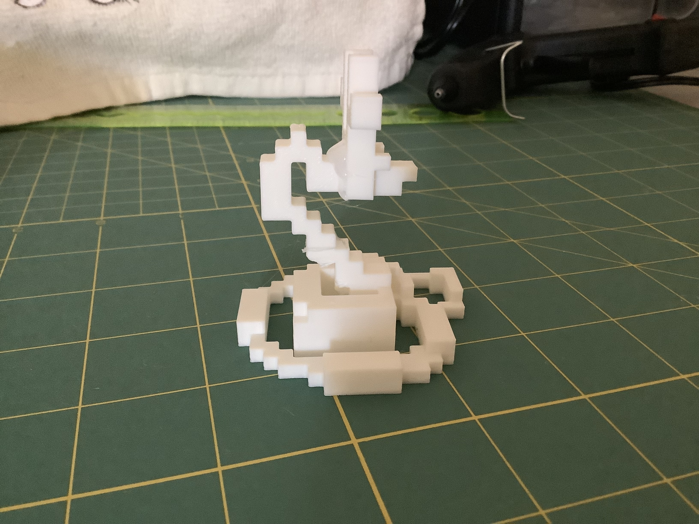

3D Print
I initially split the print up into several mini parts; however, the small size of the items caused the printer to start moving the objects and caused a mess, so I had to stop it halfway through.
I then decided to revise my Minecraft sculpture by heavily simplifying the design of my dragon. I split it into three parts in order to make it function like this:
